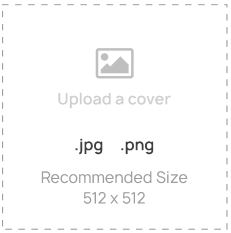

  <!---middle section-->
<div class="write-story-section">
  <div class="write-story-bg-content">
      <div class="w-st-content">
        <form #writeStoryForm="ngForm" (ngSubmit)="onSubmit(writeStoryForm.valid)">
          <!--first screen-->
          <div class="w-s-first" [className]="wsfirst ? 'wsfirst closesecond' : 'wsfirst open'">
            <div class="top-line">
              <span ></span>
            </div>
            <div class="w-s-f-header">
              <div class="w-s-f-t">{{'wrstrory_beforewebegin' | translate}}</div>
              <div class="w-s-f-de">{{'wrstrory_chooseyourpreferredlanguagetowriteastory' | translate}}</div>
            </div>
            <div class="w-s-f-middle">
              <select class="minimal" [(ngModel)]="data.language" name="language" #language="ngModel">
                <option *ngFor="let langaugesData of globalservice.allLanguages" value="{{langaugesData.slug}}">{{langaugesData.title}}</option>
              </select>
              <!--  <div class="select minimal" tabindex="1">
                  <div class="test"  *ngFor="let langaugesData of globalservice.allLanguages">
                  <input class="selectopt" name="test" type="radio" id="opt1" value="{{langaugesData.id}}">
                  <label for="opt1" class="option">{{langaugesData.title}}</label>
              </div> -->
              <div class="check-language">
                  <input type="checkbox" class="checkmark" name="translate" />
                  <label>{{'wrstrory_setthisasmydefaultlangauge' | translate}}</label>
              </div>
            </div>
            <div class="w-s-f-footer">

                <button type="button" *ngIf="globalservice.writestoryType!='nano'" class="btn btn-save" (click) ="secondscreen()">{{'save' | translate}}</button>
                <button type="button" *ngIf="globalservice.writestoryType =='nano'" class="btn btn-save" (click) ="forthscreen()">{{'save' | translate}}</button>
                <button type="button" class="btn btn-cancel-s" (click) ="backClicked()">{{'cancel' | translate}}</button>
            </div>
          </div>
          <!--second screen-->
          <div class="w-s-second"  [className]="wssecond ? 'wssecond closesecond' : 'wssecond open'">
              <div class="top-line"><span></span>
              </div>
              <div class="w-s-s-header">
                <div class="upload-img">
                   <!--  <input type="file" name="d-c-s-file" id="file-input">
                     -->
                    <input #file type="file" [(ngModel)]="data.cover_image" name="cover_image" #cover_image="ngModel"  id="file-input" accept='image/*' (change)="preview($event,file.files)">
                    
                    

                </div>
              </div>
              <div class="w-s-s-middle">
                <div class="write-form">
                  <div class="wform-group">
                    <label>{{'wrstrory_storytitle' | translate}}<span>*</span></label>
                    <input type="text" [(ngModel)]="data.title" name="title" #title="ngModel" placeholder="{{'wrstrory_storytitle' | translate}}">
                  </div>
                  <div class="wform-group">
                      <label>{{'wrstrory_tagline' | translate}}<span>*</span></label>
                      <textarea rows="1" type="text" [(ngModel)]="data.tag_line" name="tag_line" #tag_line="ngModel" placeholder="{{'wrstrory_tagline' | translate}}"></textarea>
                  </div>
                  <div class="wform-group" style="margin-top:15px;" *ngIf="dispTitleId">
                    <label>{{'wrstrory_titlenglish' | translate}}<span>*</span></label>
                    <textarea rows="1" type="text" [(ngModel)]="data.title_id" name="title_id" #title_id="ngModel" placeholder="{{'wrstrory_titlenglish' | translate}}"></textarea>
                  </div>
                </div>
              </div>
              <div class="w-s-f-footer">
                  <button type="button" class="btn btn-save" (click) ="firstscreen()">{{'previous' | translate}}</button>
                  <button type="button" class="btn btn-save" [disabled]="!data.title || !data.tag_line || !data.cover_image" (click) ="thirdscreen()">{{'next' | translate}}</button>
                  <button type="button" class="btn btn-cancel-s" (click) ="backClicked()">{{'cancel' | translate}}</button>
              </div>
              <!-- <p class="skip-write">{{'wrstrory_skiptowriting' | translate}}</p> -->
              <p class="skip-write"></p>
          </div>
          <!--third screen-->
          <div class="w-s-third"  [className]="wsthird ? 'wsthird closethird' : 'wsthird open'">
              <div class="top-line"><span></span>
              </div>
              <div class="w-s-t-middle">
                  <div class="write-form">
                      <div class="wform-group">
                        <label>{{'wrstrory_writingstyle' | translate}}<span>*</span></label>
                        <select [(ngModel)]="data.writing_style" name="writing_style" #writing_style="ngModel" class="minimal">
                            <option value="prose">Prose</option>
                            <option value="poetry">Poetry</option>
                        </select>
                      </div>
                      <div class="wform-group">
                          <label>{{'wrstrory_genre' | translate}}<span>*</span></label>
                          <select [(ngModel)]="data.genre" name="genre" #genre="ngModel" class="minimal">
                              <option *ngFor="let genresData of globalservice.allGenres" value="{{ genresData.id }}">{{ genresData.title }}</option>
                          </select>
                      </div>
                      <div class="wform-group">
                          <label>{{'wrstrory_copyrights' | translate}}<span>*</span></label>
                          <select [(ngModel)]="data.copy_rights" name="copy_rights" #copy_rights="ngModel" class="minimal">
                              <option value="All Rights Reserved">All Rights Reserved</option>
                          </select>
                      </div>
                      <div class="check-language advanced-option">
                          <input type="checkbox" class="checkmark" name="translate" (click)="advanced()">
                          <label>{{'wrstrory_advanced_options' | translate}}</label>
                      </div>
                      <!--advanced content-->
                      <div [className]="adsec ? 'adsec closeadc' : 'adsec open'">
                        <div class="advanced-content-section">
                          <div class="payment-section">
                            <div class="a-sec-title">{{'wrstrory_paymentdetails' | translate}}</div>
                            <div class="wform-group">
                                <label>{{'wrstrory_howreaderscanpay' | translate}}</label>
                                <select class="minimal">
                                    <option>Pay for Entire Series</option>
                                    <option>Gujarati</option>
                                    <option>Tamil</option>
                                </select>
                                <p class="tad">{{'wrstrory_termsandconditions' | translate}}</p>
                            </div>
                          </div>
                          <div class="advanced-option-sec">
                              <div class="a-sec-title">{{'wrstrory_advanced_options' | translate}}</div>
                              <div class="wform-group">
                                  <label>{{'wrstrory_keywords' | translate}}</label>
                                  <input type="text" name="st" placeholder="{{'wrstrory_enteryourkeywordsandseparatethemwithcommas' | translate}}">
                              </div>
                              <div class="wform-group">
                                  <label>{{'wrstrory_referralcode' | translate}}</label>
                                  <input type="text" name="st" placeholder="{{'wrstrory_enteryourreferralcodeoptional' | translate}}">
                              </div>
                              <div class="noti-setting-toggle-content">
                                  <div class="n-s-c">{{'wrstrory_areyoupostingonbehalfofsomeone' | translate}}</div>
                                  <div class="n-s-t">
                                      <label class="switch">
                                          <input type="checkbox" checked>
                                          <span class="slider"></span>
                                      </label>
                                  </div>
                              </div>
                              <div class="wform-group">
                                  <label>{{'wrstrory_author' | translate}}</label>
                                  <input type="text" name="st" placeholder="{{'wrstrory_enterthenameoftheauthor' | translate}}">
                              </div>
                          </div>
                          <div class="decdication-sec">
                              <div class="a-sec-title">{{'wrstrory_dedication' | translate}}</div>
                              <div class="de-content">
                                  <div class="dedi-upload-img">
                                      <input type="file" name="d-c-s-file" id="file-input">
                                      
                                  </div>
                                  <div class="wform-group">
                                      <label>{{'wrstrory_addtexthere' | translate}}</label>
                                      <input type="text" name="addtxt">
                                  </div>
                              </div>
                          </div>
                        </div>
                      </div>
                    </div>
                </div>
                <div class="w-s-f-footer">
                    <button type="button" class="btn btn-save" (click) ="secondscreen()">{{'previous' | translate}}</button>
                    <button type="submit" class="btn btn-save">{{'wrstrory_startwriting' | translate}}</button>
                    <button type="button" class="btn btn-cancel-s" (click) ="backClicked()">{{'cancel' | translate}}</button>
                </div>
          </div>
          <!--forth screen-->
          <div class="w-s-third"  [className]="wsforth ? 'wsforth closeforth' : 'wsforth open'">
              <div class="top-line">
              </div>
              <div class="w-s-t-middle">
                  <div class="write-form">
                      <div class="wform-group">
                          <label>{{'wrstrory_genre' | translate}}<span>*</span></label>
                          <select [(ngModel)]="data.genre" name="genre" #genre="ngModel" class="minimal">
                              <option *ngFor="let genresData of globalservice.allGenres" value="{{ genresData.id }}">{{ genresData.title }}</option>
                          </select>
                      </div>
                      <div class="wform-group">
                          <label>Content<span>*</span></label>
                          <div class="episode-writting-section">
                              <div class="story-writting-section">
                                   <quill-editor format="object"  [styles]="editorStyle" [modules]="config"  theme="bubble" (onContentChanged)="richTextEditorChange($event)" placeholder="{{'startwritingyourstoryhere' | translate}}"></quill-editor>
                              </div>
                          </div>
                      </div>
                    </div>
                </div>
                <div class="w-s-f-footer">
                    <button type="button" class="btn btn-save" (click) ="backfirstscreen()">{{'previous' | translate}}</button>
                    <button *ngIf="globalservice.writestoryType!='nano'" type="submit" class="btn btn-save">{{'wrstrory_startwriting' | translate}}</button>
                    <button *ngIf="globalservice.writestoryType == 'nano'" [disabled]="!nanocount" type="submit" class="btn btn-save">Create Nano Story</button>
                    <button type="button" class="btn btn-cancel-s" (click) ="backClicked()">{{'cancel' | translate}}</button>
                </div>
          </div>

        </form>
      </div>
    </div>
</div>

  <!--end-->
